जीवन-निर्माण
[कहानियाँ]
सुदर्शनसिंह ‘चक्र’
दो शब्द
मनुष्य और पशु-पक्षी सबमें जीवन है। सब में जीवित रहने की इच्छा है। सब जीवित रहने के लिए प्रयत्न करते हैं। इसलिये भोजन करना, भोजन पाने का प्रयत्न करना, मल-त्याग, नींद लेना, विपत्ति से भय, अपनी रक्षा के लिये चेष्टा, सन्तान उत्पन्न करना और सन्तान के लिये मोह, ये बातें मनुष्य और-पक्षी आदि सभी में पाई जाती हैं। अपनी इन सब आवश्यकताओं की पूर्ति के लिये थोड़ी बहुत समझ भी सभी प्राणियों में होती हैं। मनुष्य सृष्टिकर्ता की सृष्टि का सर्वश्रेष्ठ प्राणी है। लेकिन केवल बुद्धि के कारण मनुष्य सर्वश्रेष्ठ नहीं है। बुद्धि के कारण ही उसे श्रेष्ठ मानें तो बहुत सी बातों में दूसरे पशु-पक्षी बहुत से मनुष्यों से अधिक समझदार जान पड़ेंगे।
मनुष्य की श्रेष्ठता है धर्म के कारण धर्म का मतलब कोई सम्प्रदाय नहीं है। धर्म का मतलब वे मूलभूत नियम हैं, वे सद्गुण हैं, जिनके कारण मनुष्य अपने और विश्व के दूसरे सब लोगों के लिए सुखदायी सहायक और उन्नति का साधक बन जाता है।
उन सद्गुणों से ही मनुष्य के जीवन का सच्चा निर्माण होता है। मनुष्य-जीवन के निर्माण करने वाले उन सद्गुणों को छोटी कहानियों के द्वारा इस पुस्तक में समझाने की चेष्टा की गई है।
लेखक
सत्य
वह केवल तेरह-चौदह वर्ष का बालक था। उसका नाम था तेंग.शी.चेग लेकिन सुविधा के लिए हम उसे तेंग कहेंगे। जापानी सेना ने चीन पर आक्रमण किया था। चीनी देश-भक्तों की टोलियाँ हार रही थीं। उन लोगों ने तेंग को कुछ आवश्यक समाचार लेने जापानी सेना के शिविर में भेजा।
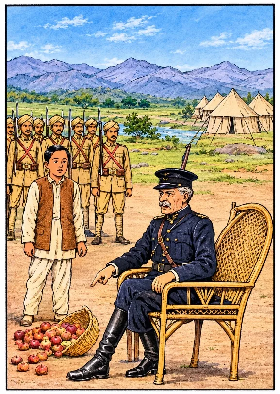
तेंग फलों का टोकरा लेकर जापानी शिविर में गया। उसे साधारण फल बेचने वाला समझ कर किसी ने रोका नहीं। लेकिन फल बेचते हुये एक उच्च अधिकारी के तम्बू में तेंग यह देख कर घुस गया कि तम्बू खाली है। उसने वहाँ से एक नक़शा उठाकर फलों के टोकरे में नीचे छिपा दिया।
तेंग जब नक्शा छिपा रहा था वह अधिकारी आ पहुँचा। फल यह हुआ कि तेंग पकड़ लिया गया और उसे उस जापानी सेना के ऊँचे अधिकारी के सामने पहुँचाया गया।
अधिकारी ने पूछा—‘तुम यहाँ क्यों आये थे?’
तेंग—यह पता लगाने कि आपकी यह सेना आगे किस ओर आक्रमण करेगी। जिससे अपने देश के लोगों को मैं सावधान कर सकूँ। क्योंकि मैं पकड़ लिया गया, इसलिये मेरा प्रयत्न नष्ट हो गया।
अधिकारी को आश्चर्य हुआ कि यह बालक फल-बेचने और फल रखने के लिये बड़े कागज को चुराने की बात न कहकर सच बोल रहा है। उसने पूछा—‘तुम जानते हो कि तुम्हारे अपराध का क्या दण्ड मिलेगा?’
तेंग—‘जानता। आप मुझे गोली मार देंगे।’
अधिकारी—‘तब तुमने बहाना बनाकर बचना क्यों पसन्द नहीं किया?’
तेंग—‘चीनी देश-भक्त का लडका प्राण जाने के भय से झूठ नहीं बोल सकता।’
अधिकारी—‘तुम्हें किसने भेजा है? वे लोग कहाँ हैं? यदि तुम यह वता दो तो तुम्हें छोह दिया जायेगा।’
तेंग—‘अपने देश और अपने लोगों के साथ मैं विश्वासघात नहीं कर सकता। किसी भी लालच से मैं आपको यह सब नहीं बताऊँगा।’
जापानी सैनिक अधिकारी ने अपने साथियों से कुछ सलाह की और फिर तेंग से बोला—‘हम तुम्हारी सचाई से बहुत प्रसन्न हैं। तुमको छोड़ दिया जाता है।’
सच बात यह थी कि जापानी अधिकारी ने तेंग के पीच्छे अपने जासूस लगा दिये थे कि वे देखें कि तेंग कहाँ जाता है और किन लोगों से मिलता है।
तेंग भी कम चतुर नहीं था। वह वहा से चलकर व्यर्थ कुछ सड़कों पर भटकता रहा और शाम को नदी किनारे चला गया। अन्त में जापानी सेना के जासूसों की आँख बचाकर वह निकल जाने में सफल हो गया।
तेंग में यह गौरव था कि मैं चीनी देश-भक्त का लड़का होकर झूठ कैसे बोल सकता हूँ। हमारे लिये यह क्या कम गौरव की बात है कि हम भारतवासी हैं। भारती होकर हम कहीं किसी बात में किसी लोभ या भय से झूठ बोलें यह हमारे लिये बहुत लज्जा की बात है।
राष्ट्र-पिता महात्मा गान्धी जी कहते थे—‘सत्य ही परमेश्वर है। सत्य को पूरी तरह पा लेना परमेश्वर को अपने भीतर पालेना है।’
सत्य को अपनाने वाला सब का विश्वास पा लेता है। उसे सब ओर सफलता मिलती है। सबसे बड़ी बात यह कि सत्य पर स्थिर रहने वाले को जो निश्चिन्तता, निर्भयता और अपने आप पर भरोसा रखने का बल प्राप्म हो जाता है; उसकी तुलना संसार के बड़े से बड़े सुख एवं सम्मान से नहीं की जा सकती।
अहिंसा
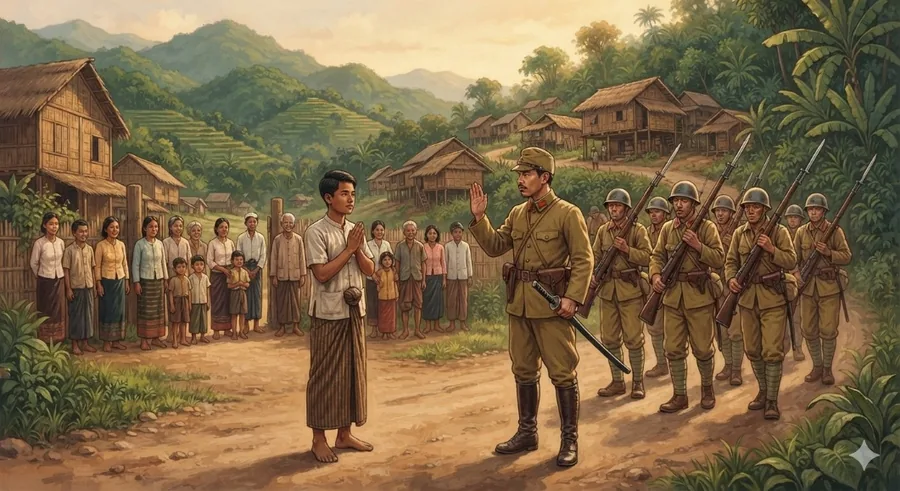
महात्मा गांधी के नेतृत्व में जो अहिंसा सत्याग्रह चल रहा था, भारत के पड़ोसी देश बर्मा के लोग उससे अनजान नहीं थे। अभी पिछले महायुद्ध की बात है, जबकि जापानी सेना ने बर्मा पर आक्रमण कर दिया और अंग्रेजों को एक के बाद दूसरा स्थान छोड़कर पीछे हटते जाना पड़ा।
जापानी सेना की एक टुकड़ी बर्मा के पहाड़ी क्षेत्र से होकर रंगून की ओर आ रही थी। इस टुकड़ी के पास खाने-पीने के सामान की कमी हो गई। दूध, सब्जी और फल तो कई दिनों से सैनिकों को नहीं मिले थे। सैनिक प्रसन्न थे; क्योंकि वे एक पहाड़ी कस्बे के पास पहुँच रहे थे और उनको आशा थी कि वहाँ उन्हें सब प्रकार की खाने-पीने की चीजें मिल जाएँगी।
अचानक एक नौजवान उस कस्बे से सेना की ओर आता दिखाई पड़ा। उसने सैनिकों को रुकने के लिए पुकार कर कहा। सैनिक रुक गए और उसकी प्रतीक्षा करने लगे।
समीप आकर उस नौजवान ने जापानी सेना के अफसर का अभिवादन किया और बोला—‘कृपा करके आप अपने सैनिकों के साथ हमारे कस्बे को एक ओर छोड़कर आगे चले जाएँ।’
‘क्यों?’ सैनिक अफसर ने पूछा।
“इसलिए कि हमारे मुखिया नहीं चाहते कि सेना के लोग कस्बे में आएँ और यहाँ के लोगों को तंग करें,” नौजवान ने कहा।
‘हम तुम्हारे मुखिया का हुक्म नहीं मान सकते,’ अफसर ने कहा। उसे कुछ क्रोध आ रहा था।
‘तब आप हम सबको मारे बिना कस्बे में नहीं जा सकते,’ नौजवान ने निर्भयतापूर्वक कहा, ‘आप देखिए, कस्बे के सब लोग—स्त्रियाँ और बच्चे तक रास्ते में खड़े हैं और उनमें से कोई रास्ता नहीं छोड़ेगा।’
‘तुम लोग लड़ाई करोगे?’ अफसर ने क्रोध से पैर पटका।
“अपने से दुर्बल लोगों से हम लड़ाई नहीं करते,” नौजवान बोला।
‘क्या?’ अफसर चीख पड़ा, ‘हम लोग तुमसे कमजोर हैं?’
‘नाराज होने की कोई बात नहीं,’ नौजवान स्थिरतापूर्वक कह रहा था, ‘आप लोगों के पास बड़े-बड़े हथियार हैं। मारकाट करने की शक्ति आपके पास बहुत अधिक है। लेकिन आपका भरोसा इन बेजान लोहे के हथियारों पर है, जो हत्या के खून से अपवित्र हो चुके हैं।’
“तुम लोगों के पास क्या है?” अफसर ने पूछा।
‘हथियार के नाम पर एक छड़ी भी नहीं है,’ नौजवान ने कहा, ‘लेकिन हमारा भरोसा भगवान बुद्ध की अहिंसा पर है, जो भारत में फिर से महात्मा गांधी के रूप में आकर मनुष्यों को सिखा रहे हैं।’
जापानी सेना का वह अधिकारी स्वभाव का भला था। महात्मा गांधी के नाम से भी वह परिचित था। वह बोला—‘तुम अपने मुखिया से कहो, हम कस्बे के लोगों को तंग नहीं करेंगे। हो सकता है कि तुम्हारी बात ठीक हो। लेकिन हमारे सैनिक थके हैं और भूखे भी हैं।’
नौजवान लौट गया। अंत में सेना के अधिकारी ने यह बात मान ली कि सेना कस्बे से दूर पड़ाव डालेगी। कोई सैनिक कस्बे में नहीं जाएगा। कस्बे का मुखिया सेना को दूध, फल, शाक आदि चीजें जितनी दे सकेगा, सेना के पड़ाव पर भेज देगा और उन चीजों का मूल्य उन्हें दिया जाएगा।
अहिंसा केवल बड़े-बड़े आंदोलनों के लिए ही है, ऐसी बात यहाँ समझने की भूल हमें नहीं करनी चाहिए। हमारे दैनिक जीवन में अहिंसा आ जाए तभी हम बापू के दिखाए रास्ते पर चलने वाले कहला सकेंगे।
अहिंसा का अर्थ केवल किसी को न मारना नहीं है। अपने शब्द या अपनी किसी चेष्टा से किसी को दुःख पहुँचाना हिंसा ही है और इस प्रकार की हिंसा को एकदम छोड़ देना अहिंसा है।
सदाचार
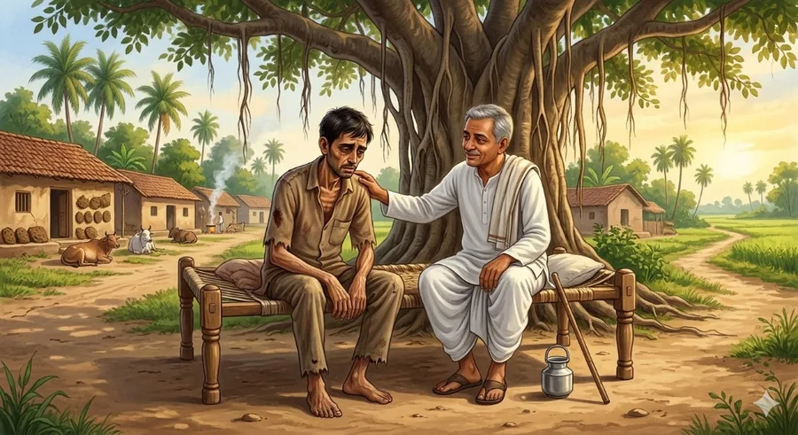
‘रामनाथ! क्या दशा है तुम्हारी?’ यह रामनाथ गाँव का सबसे सुंदर और बलवान नौजवान था। आज दो वर्ष पीछे बंबई से लौटकर आया है। उसकी दशा देखकर आश्चर्य और दुःख दोनों हुआ।
“अपनी करनी का फल भोग रहा हूँ बाबू,” रामनाथ रो पड़ा।
“बंबई का पानी बहुत लोगों को रोगी कर देता है,” मैंने कहा।
रामनाथ बोला—‘बाबू, पानी का कोई दोष नहीं है। दोष तो अपना है। बंबई में जाकर मेरा भाग्य चमका। पैसा मिला। लेकिन पैसे के साथ मुझमें कुबुद्धि आ गई। कुछ बुरा संग-साथ हो गया।’
“तुम तो बहुत सदाचारी थे और अच्छे संग में ही रहना पसंद करते थे,” मैंने सहानुभूति प्रकट की।
रामनाथ ने कहा—‘मेरी बुद्धि मारी गई थी। पैसा गया, तंदुरुस्ती गई और बीमारी ने तोड़ दिया। किसी तरह हड्डियाँ बची हैं। अब आप लोगों के चरणों में आ गिरा हूँ। शायद बची जिंदगी सुधर जाए।’
बहुत ही दुःखी था रामनाथ। उसके शरीर में मांस का नाम नहीं जान पड़ता था। हड्डी-हड्डी दिखती थी। गाल पिचक गए थे। आँखें गड्ढों में धँसी थीं। चलते समय उसके पैर काँपते थे।
गाँव के सबसे अच्छे नौजवान की यह दशा देखकर किसे दुःख नहीं होगा! मैंने रामनाथ को धैर्य बँधाया और बैठाया। उससे उसकी सब बातें पूछने लगा।
पैसा मिलने पर बुरे लोगों का साथ हुआ। उनके संग के दोष से रामनाथ सदाचार के मार्ग से हट गया। कई प्रकार की बुराइयों में लगा।
बुराइयों में लगने पर उसकी बदनामी होने लगी। दूसरी ओर कदाचार में पैसा और स्वास्थ्य नष्ट होने लगा। उसे कई प्रकार की बीमारियाँ हो गईं। बचा-खुचा धन चिकित्सा में चला गया। जो लोग उसको बुराई के रास्ते ले गए थे, पैसा न रहने पर उन्होंने साथ छोड़ दिया। आस-पास के लोगों में वह पहले ही बदनाम हो चुका था। यह तो अच्छा हुआ कि किसी तरह गाँव आ गया।
रामनाथ ने यह सब बताया। वह बोला—‘बाबू! सदाचार का पालन करता था, तब सब लोग मेरा आदर करते थे। आप सब मुझसे स्नेह करते थे। मेरा मन खूब प्रसन्न रहता था। मैं सुखी था, स्वस्थ था और दूसरों को भी मुझसे सुख मिलता था।’
“जैसे ही मैं सदाचार के रास्ते से हटा, मुझे बराबर डर रहने लगा कि लोग मेरी बुराई जान न लें। मेरे लाख सावधान रहने पर भी मेरे दोष प्रकट हो गए। मेरा अपमान हुआ। लोग मुझसे घृणा करने लगे।”
“मेरा धन नष्ट हुआ। मेरे मन की शांति नष्ट हुई। मेरी तंदुरुस्ती चौपट हो गई। अपना मैंने सर्वनाश कर लिया और दूसरों की भी मुझसे बराबर हानि हुई।”
रामनाथ दुःखी था। मैं उसे समझाता रहा।
लेकिन बात तो सच ही है उसकी। सदाचार का पालन करने वाला सुखी रहेगा—समाज को सुख-शांति देगा और कदाचार का पालन करने वाला समाज की हानि तो करेगा ही, अपने स्वास्थ्य, सम्मान और सुख का भी विनाश ही कर लेगा।
संयम
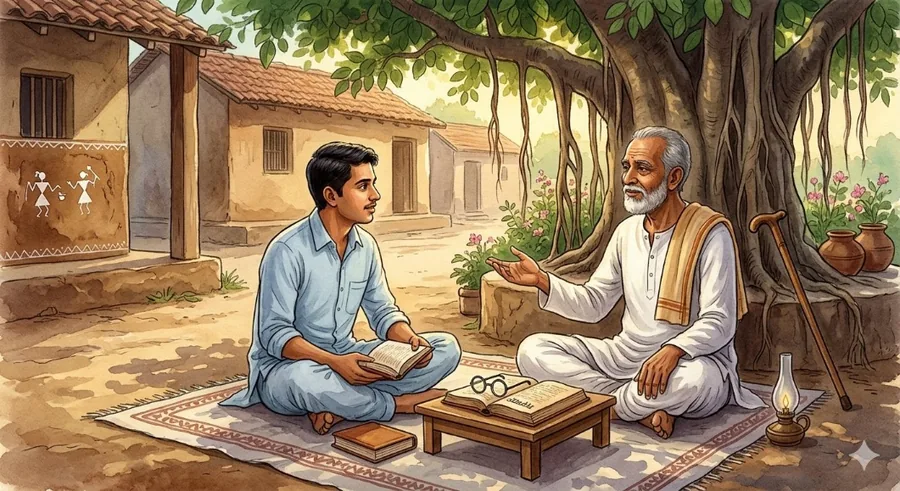
राष्ट्रपिता महात्मा गांधीजी ने कहा था—‘मैं मनुष्य की गुलामी सह लूँगा; किंतु मन की गुलामी बिल्कुल नहीं सह सकता।’
यह बात मुझे वीरेश्वर ने कही और बोला—‘आप महात्मा जी की इस बात को कैसे ठीक कह सकते हैं?’
मैं—‘मनुष्य की गुलामी से क्या हानि है?’
वीरेश्वर—‘पराधीनता तो सबसे बड़ी बुराई है। उससे तो मनुष्य के सब गुण मारे जाते हैं। किसी ओर वह अपना विकास नहीं कर सकता।’
मैं—‘एक पागल आदमी मकान की छत से कूदना चाहे, तो उसे तुम स्वतंत्र कर देना पसंद करोगे?’
वीरेश्वर—‘बिल्कुल नहीं। उसे कमरे में बंद कर देना पड़ेगा। स्वतंत्र कर देने पर तो वह छत से कूदकर अपने हाथ-पैर तोड़ लेगा और कौन जाने, मर भी जा सकता है।’
मैं—‘मनुष्य का जीवित रहना और सकुशल रहना पहली आवश्यकता है। स्वाधीन रहना उसके पीछे की बात।’
वीरेश्वर—‘जी हाँ।’
मैं—‘तब देखो, मन का गुलाम उस पागल से भी बुरा होता है। वह अपने मन की बात करना चाहता है। मन इंद्रियों के पीछे दौड़ता है।’
वीरेश्वर—‘इसमें बुराई क्या हुई?’
मैं—‘जो मनुष्य चटोरे होते हैं, उनका क्या हाल होता है?’
वीरेश्वर—‘वे अक्सर रोगी हो जाते हैं। जीभ पर वश न होने से वे अनाप-शनाप खाकर पेट खराब कर लेते हैं और तब बीमार पड़ते हैं। स्वाद लेने की शक्ति से भी वे हाथ धो बैठते हैं।’
मैं—‘केवल जीभ की गुलामी के कारण स्वास्थ्य एवं जीवन दोनों खतरे में पड़ जाते हैं।’
वीरेश्वर—‘बात तो आप ठीक कहते हैं। इंद्रियों की दासता करने वाला अपने स्वास्थ्य का अवश्य नाश कर लेता है।’
मैं—‘स्वास्थ्य के नाश में किसी सद्गुण के पनपने की कोई संभावना है?’
वीरेश्वर—‘एकदम नहीं।’
मैं—‘इस प्रकार मन की दासता करने वाला अपने लिए ही दुःखदायी नहीं होता। दूसरों को भी उससे पीड़ा मिलती है।’
वीरेश्वर—‘कोई अपने उपार्जन के धन से असंयम करे, किसी कुमार्ग पर न चले, तो दूसरों की क्या हानि?’
मैं—‘एक मनुष्य बीमार होगा, तो उसकी सेवा में औरों को लगना पड़ेगा। उसका रोग यदि संक्रामक हुआ, तो दूसरे बीमार पड़ेंगे। वह जो जीभ आदि की तृप्ति के लिए पदार्थों का अनाप-शनाप उपयोग करता है, दूसरों को उन पदार्थों से वंचित होना पड़ता है।’
वीरेश्वर सहसा बोला—‘मैं समझ गया। समाज की सुख-शांति और अपनी सुख-शांति के लिए भी संयम बहुत आवश्यक है। संयम का पालन स्वाधीनता की अपेक्षा भी अधिक आवश्यक है।’
अस्तेय
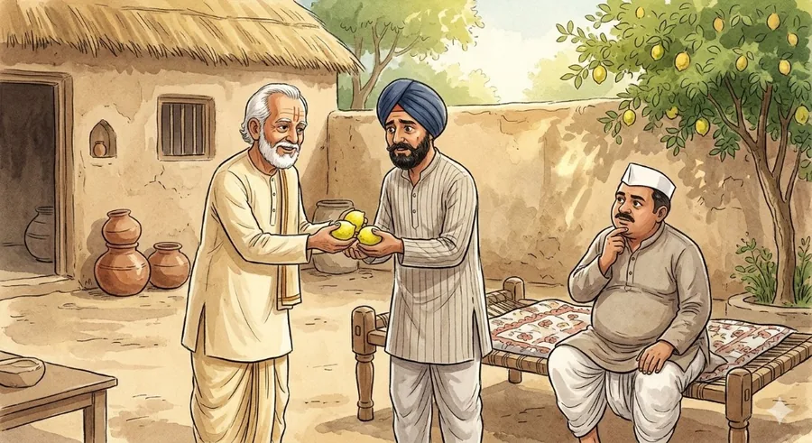
‘आज आप बहुत उदास दिखते हैं।’ बात सचमुच अटपटी थी, क्योंकि भाई हरिसिंह सदा हँसने वाले लोगों में हैं। उनका चेहरा गुलाब के फूल की भाँति खिला ही रहता है।
पंडित जी की बात सुनकर भाई हरिसिंह ने कहा—‘छोटा बच्चा बीमार है। महीने के अंतिम सप्ताह में वैसे ही जेब खाली रहती है। बाजार नींबू लेने गया था, तो देखा किसी ने जेब उड़ा दी है।’
‘नींबू आप मेरे यहाँ से ले जाइए।’ पंडित जी भीतर गए और घर में से लाकर उन्होंने भाई हरिसिंह को दो नींबू दिए।
‘मैं पिछले वर्ष ही विलायत गया था,’ भाई हरिसिंह ने कहा—‘लंदन से दूसरे शहर जाते समय ट्रेन में मनीबैग भूल गया। कुछ कागज जेब से निकाले थे, उसी समय गिर गया होगा। मनीबैग में मेरे नाम का कार्ड था, जिस पर मेरे ठहरने का पता लिखा था। तीसरे दिन रेलवे-विभाग ने पार्सल से मेरा मनीबैग मेरे पास भेज दिया।’
‘दूसरे देशों में इस प्रकार चोरी न होने की बातें वहाँ जाने वाले लगभग सभी कहते हैं,’ पंडित जी ने कहा—‘यह एक प्राकृतिक नियम है कि चोरी करने वाले को आखिर में रोटी के लाले भी पड़ते हैं। जहाँ के लोग आमतौर पर चोरी नहीं करते, वहाँ भुखमरी नहीं आती।’
‘चोरी और भुखमरी का क्या संबंध?’ पड़ोस के अन्न के व्यापारी भूरेमल जी ने पूछा। वे भी किसी काम से पंडित जी के पास आए थे।
‘यह एक नियम है कि जिस शक्ति का आप दुरुपयोग करते हैं, प्रकृति उसे आपसे छीन लेती है,’ पंडित जी ने बताया—‘जैसे जो बहुत स्वाद के पीछे पड़ता है, उसकी भोजन करने की शक्ति पेट खराब होने से नष्ट हो जाती है।’
“लेकिन चोरी से इसका तो कोई संबंध नहीं,” भूरेमल जी ने कहा।
‘बहुत-सी बातें हमें दिखती नहीं, लेकिन वे होती हैं,’ पंडित जी कह रहे थे—‘चोरी दूसरे के धन को गलत ढंग से लेना है। यह धन का दुरुपयोग है। इसलिए धन जब इस रास्ते आता है, वह घर के धन को भी किसी न किसी बहाने नष्ट ही करता है।’
बात भूरेमल जी की समझ में नहीं आई। पंडित जी ने फिर कहा—‘यहाँ सब लोग प्रायः किसी विदेशी कंपनी का माल लेना क्यों पसंद करते हैं? आप जानते हैं?’
‘विदेशी कंपनियों का माल अक्सर ठीक होता है,’ भूरेमल जी ने कहा—‘उसमें मिलावट होने का भय नहीं होता और उनका दाम भी निश्चित रहता है।’
“अब बताइए, जो लोग माल में मिलावट करते हैं, घटिया माल देते हैं, दाम बढ़ाकर बेईमानी करते हैं, वे ज्यादा लाभ में रहते हैं या जो ईमानदारी से काम करते हैं वे?” पंडित जी ने पूछा।
‘व्यापार में लाभ तो साख से होता है,’ भूरेमल जी ने बताया—‘ईमानदार व्यापारी की साख जम जाती है। लोग उस पर और उसके माल पर भरोसा करते हैं। इसलिए उसकी बिक्री अधिक होती है। लाभ में वही रहते हैं।’
‘भाई! चोरी और बेईमानी दोनों आदमी की साख गिरा देते हैं,’ पंडित जी ने कहा—‘आदमी दूसरों की दृष्टि में और उससे भी पहले अपनी दृष्टि में ही गिर जाता है। फिर कुछ प्रकृति के भी नियम हैं। वे नियम प्रायः कठोर होते हैं। बुराई के रास्ते आया धन सुख नहीं देता।’
‘पंडित जी! इतना मैं भी समझता हूँ कि जो किसी प्रकार की चोरी और बेईमानी नहीं करता, ठीक आदमी वही है,’ भाई हरिसिंह जी बोले—‘उसके जरिए ही देश और समाज की सेवा होती है। वह खुद भी सुखी, प्रसन्न और निर्भय रह सकता है।’
भाई हरिसिंह को जल्दी थी। वे नींबू लेकर चले गए।
असंचय
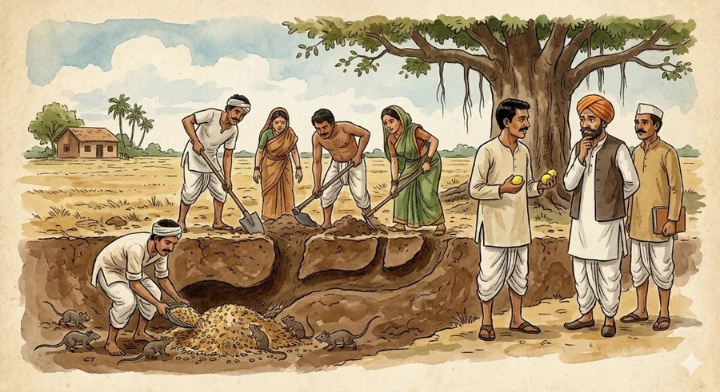
फसल कट चुकी थी। खेत से अन्न उठाया जा चुका था। मैंने देखा कि हरिजनों का एक समूह खेत में एक स्थान पर गड्ढा खोद रहा है। कुतूहलवश मैं उनके समीप चला गया।
‘तुम लोग क्या कर रहे हो?’ मैंने पूछा, क्योंकि वे लोग कोई सीधा गड्ढा नहीं खोद रहे थे।
‘चूहे का बिल खोद रहे हैं,’ उनमें से एक ने बताया।
‘चूहे को पकड़ना है, तो बिल में पानी डालो,’ मैंने कहा—‘वह अपने-आप निकल आएगा।’
‘इस बिल से अन्न मिलेगा,’ उन लोगों ने कहा।
उन लोगों को काफी टेढ़ा और गहरा बिल मिला। वे उसे बराबर खोदते गए। अंत में उसमें अन्न का एक भंडार मिला। साथ ही चार-पाँच चूहे, जिनमें कुछ बच्चे भी थे, निकले। चूहे के बिल से जो अन्न निकला, उसे देखकर मुझे आश्चर्य हुआ। मेरा अनुमान है कि वह अवश्य तीस-पैंतीस सेर होगा। वह मिला-जुला अन्न था और उसमें घास के बीज तथा दूसरा कूड़ा भी काफी था; फिर भी अन्न की राशि बड़ी थी। चूहे खेतों से किसान के परिश्रम की कमाई कितनी बड़ी मात्रा में चुरा लेते हैं, यह देखकर मैं हैरान हुआ।
वे लोग चूहे के बिल से निकला अन्न परस्पर बाँट रहे थे। उनमें से एक ने बताया—‘वर्षा से कुछ पहले खोदने पर चींटी के बिल से भी सात-आठ सेर अन्न निकल आता है। लेकिन चींटी के बिल में अन्न के नाम पर घास के बीज ही अधिक होते हैं।’
“बिल खोदने पर चींटियाँ और उनके अंडे-बच्चे मर नहीं जाते?” मैंने पूछा।
‘वे तो मरते ही हैं,’ उसने बताया।
‘बुरी बात है,’ मैंने कहा।
‘क्या बुरी बात है बाबू?’ वह हरिजन मेरा मुख देखने लगा।
‘चूहा दूसरे की कमाई चोरी करके इकट्ठा करता है, इसलिए उससे वह छीन लेना ठीक है,’ मैंने समझाया—‘लेकिन चींटी परिश्रम करके घास के बीज वर्षा के उन दिनों के लिए इकट्ठा करती है, जब उसे भोजन को कुछ नहीं मिल सकता। उससे उसकी मेहनत की कमाई छीन लेना और उसके अंडे-बच्चे नष्ट कर देना बहुत बुरी बात है।’
उस हरिजन भाई की समझ में मेरी बात आ गई और उसने उसी दिन से चींटी के बिल न खोदने की प्रतिज्ञा कर ली।
हमारे समाज में भी दो प्रकार के संचय करने वाले लोग हैं—(१) चूहों जैसे और (२) चींटियों जैसे।
दूसरों के परिश्रम की कमाई जो इकट्ठा करते हैं और उससे खुद लाभ उठाना चाहते हैं—ऐसे लोग चूहों जैसे हैं।
किसान, मजदूर और दूसरे लोग जो परिश्रम करके कमाई करते हैं और विपत्ति में काम आने के लिए कुछ धन इकट्ठा करते हैं, वे चींटियों के समान बुद्धिमान हैं। वे सबके लिए आदरणीय हैं।
एक तीसरा प्राणी होता है गोह। वह अपने बिल के मुख पर कंकड़ियाँ इकट्ठी करता है। इन कंकड़ियों से उसे भी असुविधा होती है और दूसरे जीवों को भी आने-जाने में कष्ट होता है।
हम सब में गोह का यह अविचार कुछ पाया जाता है। अपनी आवश्यकता से अधिक अन्न, कपड़े, जूते तथा दूसरी बहुत-सी वस्तुएँ हम लोग इकट्ठी करते रहते हैं।
इस प्रकार व्यर्थ संग्रह रखने से हमको उन वस्तुओं की रक्षा की चिंता बनी रहती है। साथ ही इस प्रकार बहुत अधिक सामान घरों में बेकार इकट्ठा रहने के कारण बाजार में उन सामानों की कमी रहती है। उनके दाम बढ़े रहते हैं और दूसरे लोगों को अपनी आवश्यकता का सामान मिल नहीं पाता।
हम चूहे या गोह न बनें, यही असंचय का पाठ है। अपनी सच्ची आवश्यकता से अधिक कोई वस्तु इकट्ठी न करें।
क्षमा
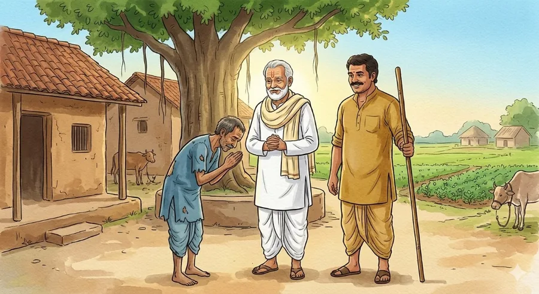
‘मैं कालू की हड्डी-पसली तोड़ दूँगा और उसके खेत में एक तिनका नहीं रहने दूँगा।’ वीरभद्र क्रोध में लाठी उठाए हरिजनों के घर की ओर जा रहे थे और ऊँचे स्वर से कुछ बकते भी जाते थे।
कालू चमार है। गरीब है। शरीर से भी कमजोर है। लेकिन है थोड़ा दुष्ट। वह प्रायः लोगों के खेत में अपनी गाय छोड़ देता है। उसने वीरभद्र का मटर का खेत कल शाम गाय से चरा लिया। हानि थोड़ी हुई है, लेकिन कालू का दोष तो है।
‘आप आज मेरी एक बात मानेंगे?’ सुमंत्र पंडित ने वीरभद्र जी को बीच में ही पुकार लिया और कहने लगे—‘मानें तो कहूँ।’
“आपकी बात मैंने कभी टाली है?” वीरभद्र बोले।
सुमंत्र पंडित गाँव में सबसे बूढ़े हैं, विद्वान हैं और बहुत भले हैं। सबके सुख-दुःख में वे खोज-खबर लेते हैं। सब लोग उनका आदर करते हैं।
“कालू की गाय ने आपका कितना नुकसान किया?” पंडित जी ने पूछा।
“दस सेर मटर तो जरूर निकलती उन पौधों से, जिन्हें वह चर गई,” वीरभद्र बोले।
‘आप मेरे यहाँ से दस सेर मटर ले जाइए,’ सुमंत्र पंडित ने कहा—‘लेकिन यहीं से घर लौट जाइए। कालू से कुछ मत कहिए। उसकी दूसरे किसी से निंदा मत कीजिए।’
‘मटर की तो कोई बात नहीं,’ वीरभद्र कहने लगे—‘लेकिन यह कालू का बच्चा बहुत बिगड़ गया है।’
‘आप बलवान हैं। कालू ने अपराध न किया होता, तो क्षमा की बात क्यों उठती?’ सुमंत्र पंडित बोले—‘बलवान को ही क्षमा करने का अधिकार है। इस बार उसे क्षमा कर दीजिए। क्रोध का कोई अच्छा फल नहीं होता, क्षमा का फल भी एक बार देखिए।’
‘अच्छी बात, जैसा आप कहें।’ वीरभद्र ने बात मान ली और वे घर लौट गए।
कालू को भी इन बातों का पता लग गया। छोटे-से गाँव में बात फैलते देर तो लगती नहीं। उसे बड़ी लज्जा आई। वह दोपहर में ही सुमंत्र पंडित के पैरों पर आकर गिर पड़ा।
‘तुम वीरभद्र से माफी माँग लो,’ सुमंत्र पंडित ने कालू को वीरभद्र के घर भेज दिया। लेकिन थोड़ी देर में कालू को साथ लिए वीरभद्र खुद पंडित जी के यहाँ आ गए।
‘मैंने आपकी बात मान ही ली थी। क्षमा तो तभी कर दिया था,’ वीरभद्र बोले—‘इसे आपने मेरे पास क्यों भेजा?’
“आप इसे मारते, इसका खेत चरा लेते, तब आपको इतनी ही प्रसन्नता होती क्या?” सुमंत्र पंडित ने पूछा।
‘सो तो नहीं होती,’ वीरभद्र ने स्वीकार किया।
‘हानि तो आपकी जो हुई, वह हो ही चुकी थी,’ पंडित जी ने कहा—‘यह दुःखी होता और मन में आपकी शत्रुता लिए फिरता। अब यह आपका हितैषी हो गया है।’
कालू पंडित जी के पैरों पर गिर पड़ा और उसने ऐसा अपराध फिर न करने की प्रतिज्ञा की।
त्याग
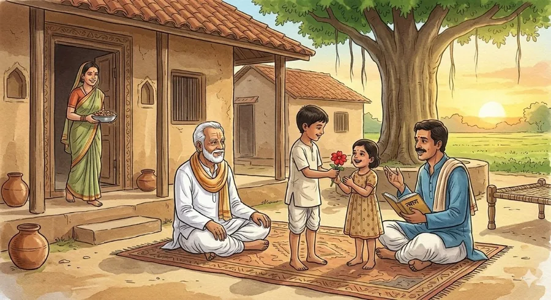
“पिताजी, ये लोग अपना अन्न मिट्टी में क्यों डाल रहे हैं?” नन्हे लल्लू ने पूछा।
पिता—‘ये खेतों में अन्न बो रहे हैं। यह अन्न उगेगा और फिर फलेगा। एक दाना कई सौ दाने बनकर इनके पास लौट आएगा।’
लल्लू कुछ मिनटों में यह सब भूल गया। वह चिड़ियों और गायों को देखने में मस्त हो गया। पिता के साथ ही घर लौटा; किंतु उसके हाथ में तब एक सुंदर फूल था।
‘मैं फूल लूँगी,’ लल्लू से छोटी श्यामा फूल देखते ही दौड़ पड़ी और उसने अपने छोटे हाथ फूल लेने के लिए उठाए।
‘फूल मेरा है!’ लल्लू ने हाथ ऊपर उठा लिया और श्यामा से बचने लगा। श्यामा का भोला मुख उदास हो गया।
‘लल्लू! तुम अच्छे लड़के हो। अपनी छोटी बहन को फूल दे दो,’ पिता ने पुचकारा—‘तुमने देखा है न कि किसान किस तरह खेत में अन्न बोकर लाभ उठाते हैं।’
‘मेरा फूल सौ फूल बनकर लौट आएगा?’ लल्लू ने पूछा। अभी वह हाथ ऊपर उठाए था।
‘तुम देकर देखो!’ पिता ने कहा।
लल्लू ने फूल दे दिया। फूल पाकर श्यामा बहुत प्रसन्न हुई। वह कूदती-नाचती घर में माता जी के पास दौड़ गई। लल्लू उसके पीछे ही दौड़ता गया। श्यामा ने दूर से ही पुकारा—‘माता जी! देखो, कैसा अच्छा फूल है! मुझे भैया ने दिया है।’
माँ ने उठकर लल्लू को गोद में उठा लिया। उसे प्यार करके बोली—‘मेरा बेटा बहुत अच्छा है।’
इसके बाद माँ ने मेवे निकाले और दोनों बालकों को दिए। मेवे लेकर लल्लू पिता के पास आया। अब उसने पूछा—‘पिताजी! मेरा फूल तो सौ फूल बनकर नहीं लौटा।’
पिता—‘बेटे! हम दुकानदार को पैसा देते हैं, तो वह पैसा ही नहीं लौटाता। वह उसके बदले कोई वस्तु देता है। तुम्हारे फूल के बदले तुम्हें माँ का प्यार, प्रसन्नता और मीठे मेवे मिले या नहीं?’
छोटे लल्लू की समझ में बात आई या नहीं, मैं नहीं जानता, लेकिन हमारी-आपकी समझ में बात आ जानी चाहिए। बिना कुछ त्याग किए संसार में कुछ मिलता नहीं, यह पहली बात।
थोड़ा त्याग करने से अधिक मिलता है, यह दूसरी बात।
अपने अधिकार का हठ करने से आपस में कड़वाहट बढ़ती है, झगड़ा होता है। लेकिन दूसरे का अधिकार मानने और अपने अधिकार का दूसरे के लिए त्याग करने से प्रेम मिलता है, यह तीसरी बात।
त्याग कभी व्यर्थ नहीं जाता। आप त्याग करते हैं, तो आपको प्रसन्नता, सम्मान और दूसरों का स्नेह अवश्य मिलता है, यह चौथी बात।
दूसरों के लिए स्वार्थ का त्याग करने की भावना जिसमें जितनी ज्यादा है, वह उतना ही देवत्व की ओर बढ़ा है। जिस समाज में ऐसे लोग जितने अधिक हैं, वह उतना उत्तम और सच्चा संपन्न समाज है, यह पाँचवीं बात।
सेवा
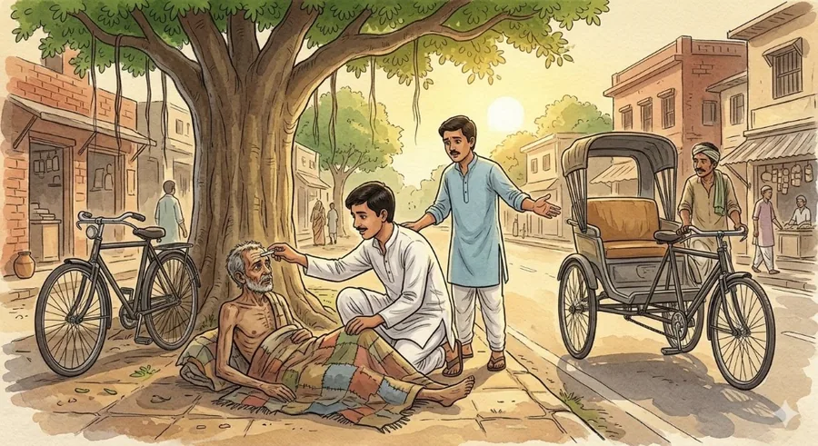
कृष्णकिशोर और रामकुमार दोनों मित्र थे। उस दिन दोनों साइकिल पर सवार होकर जा रहे थे। दोनों को बाजार जाकर कुछ सामान खरीदना था।
रास्ते में सड़क के फुटपाथ पर एक मैली गुदड़ी ओढ़े कोई आदमी लेटा था। वह कराह रहा था। कृष्णकिशोर साइकिल से उतर पड़ा। रामकुमार को भी उसके साथ उतरना पड़ा।
रामकुमार ने कहा—‘हम दोनों को बाजार से चीजें लेकर झटपट घर लौटना है। घर के लोग रास्ता देखेंगे।’
कृष्णकिशोर ने तब तक उस आदमी की गुदड़ी थोड़ी हटाकर उसका मुख खोल दिया था और उसका हाथ देख रहा था। वह बोला—‘यह आदमी बीमार है। इसे तुरंत अस्पताल पहुँचाना चाहिए। एक रिक्शा ठीक करो।’
रामकुमार ने रिक्शा ठीक किया। दोनों उस आदमी को रिक्शे में बैठाकर साथ-साथ अस्पताल गए। रिक्शे वाले को कृष्णकिशोर ने पैसे दिए। उस आदमी को अस्पताल में भर्ती कराने में उन्हें देर लगी। वहाँ लगभग दो घंटे रुकना पड़ा।
अस्पताल में उसे भर्ती कराके जब दोनों बाजार चले, तब रामकुमार ने कहा—‘तुम व्यर्थ झमेले में पड़ गए। हमें बहुत देर हुई।’
कृष्णकिशोर—‘यह व्यर्थ झमेला नहीं था। उस आदमी को हमारी सहायता की आवश्यकता थी। उसकी सहायता करना हमारा कर्तव्य था।’
रामकुमार—‘तुम उसे पहचानते थे?’
कृष्णकिशोर—‘नहीं। लेकिन पहचानने की जरूरत क्या थी! वह कष्ट में था। कोई सहायक उसके पास नहीं था। ऐसी दशा में क्या हमारा कर्तव्य उसकी सहायता करना नहीं था?’
रामकुमार—‘इस तरह हम किस-किसकी सहायता करते फिरेंगे?’
कृष्णकिशोर—‘भाई, इस प्रकार क्यों सोचते हो? यदि दूसरे हम लोगों की सहायता न करें, तो क्या हम जीवित रह सकते हैं?’
रामकुमार—‘हमारी सहायता दूसरा कोई कहाँ करता है?’
कृष्णकिशोर—‘हमारे पैदा होने के साथ दाई को, माता को, घर के दूसरे लोगों को हमारी सेवा करनी पड़ी और वे वर्षों हमारी सेवा करते रहे।’
रामकुमार—‘लेकिन वे तो हमारे घर के लोग थे!’
कृष्णकिशोर—‘सरकार, पुलिस, सेना, सफाई आदि का प्रबंध न करे, तो हमारी क्या दशा हो? इसी तरह हम कपड़ा, अन्न और दूसरी चीजें जो काम में लेते हैं, उनको उत्पन्न करने वाले हमारी कितनी सेवा करते हैं?’
रामकुमार—‘इस प्रकार तो बहुत अधिक लोगों की सेवा हम लेते हैं।’
कृष्णकिशोर—‘सच यह है कि समाज में सभी लोग एक-दूसरे की सेवा के कारण ही अपना काम चला पाते हैं। हम भी कभी मुसीबत में पड़ सकते हैं और तब हम दूसरों की सहायता पर ही निर्भर होते हैं। हम अपनी शक्ति के अनुसार सेवा कर सकते हैं। हमें किसी की सेवा का अवसर मिलने पर मुँह न मोड़ना चाहिए, यह हमारा कर्तव्य है। जब हम किसी विपत्ति में पड़े व्यक्ति की सेवा करते हैं, तब अपना कर्तव्यपालन करते हैं और अपनी मनुष्यता की रक्षा करते हैं।’
सहनशीलता
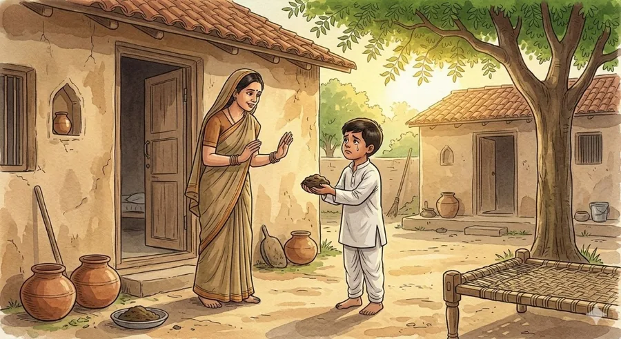
मोहन रोता हुआ घर आया। माता ने रोने का कारण पूछा, तो वह बोला—‘नरेश मुझे गाली दे रहा था।’
माता—‘बेटे! गाली देने से तुझे कहीं चोट लगी?’
मोहन—‘नहीं, लेकिन वह बहुत गंदी गालियाँ दे रहा था।’
माता—‘तुम पहले थोड़ा गोबर ले आओ।’
मोहन गोबर ले आया और माता को देने लगा। लेकिन माता ने गोबर लिया नहीं। वे बोलीं—‘इस गोबर को वहाँ मलकर धो डालो, जहाँ गालियाँ लगी हों।’
मोहन—‘गाली कहाँ लगती है?’
माता—‘कहीं नहीं लगती? जाने दो, तब गोबर फेंक दो।’
मोहन ने गोबर फेंक दिया, तब माता बोलीं—‘तुम्हारा दिया गोबर मैंने नहीं लिया। अब गोबर से किसके हाथ गंदे हुए, तुम्हारे या मेरे?’
मोहन—‘मेरे।’
माता—‘गाली न तुम्हें चोट पहुँचाती है और न कहीं चिपकती है। कोई गाली देता है, तो तुम उसकी परवाह मत करो। फिर तो उन गंदी गालियों से उसी का मुँह गंदा होगा न?’
मोहन—‘गाली देने पर कुछ भी न बोलूँ?’
माता—‘हाँ, तुम्हें सहनशील होना चाहिए।’
मोहन—‘गाली देने पर न बोलने से मैं सहनशील हो जाऊँगा?’
माता—‘सहनशील बनना यहाँ से प्रारंभ होगा। देखो, तुम पाठशाला जाते हो। कई बार तुम्हें कड़ी धूप में जाना पड़ता है। कभी वर्षा होती है।’
मोहन—‘कभी खूब सर्दी भी पड़ती है।’
माता—‘हाँ, लेकिन वर्षा, धूप या सर्दी तुम न सहो तो?’
मोहन—‘तब तो बहुत कम दिन पाठशाला जा पाऊँगा और परीक्षा में फेल हो जाऊँगा।’
माता—‘बेटे! इसी तरह हम लोगों की यह जिंदगी है। जिंदगी में तो बहुत ज्यादा धूप, सर्दी, वर्षा सहने का समय आता है। आदमी को बीमारी भी होती है और उसे बहुत-सी कठिनाइयाँ भी सहनी पड़ती हैं। लोग उसकी निंदा भी करते हैं, कभी-कभी उसे हानि भी पहुँचाते हैं। सब उसे सहना पड़ता है।’
मोहन—‘जो नहीं सहता, वह फेल हो जाता है?’
माता—‘हाँ, जो इन सब मुसीबतों को सह लेने का अभ्यास नहीं कर लेता, वह जिंदगी में फेल हो जाता है।’
मोहन—‘तब क्या करता है? रोता है?’
माता—‘उसे जिंदगी भर रोना ही पड़ता है। वह किसी काम में सफल नहीं होता। उसकी मुसीबतें बढ़ती जाती हैं। वह बराबर दुःखी रहता है और व्यर्थ दूसरों को दोष देता रहता है।’
मोहन—‘तब मैं सहनशील बनूँगा।’
माता—‘हाँ, यही ठीक बात है। धूप, वर्षा, सर्दी ही नहीं; बीमारी, नुकसान, गाली, दूसरों का विरोध और ऐसी सब मुसीबतें जो आती हैं, उन्हें प्रसन्न मन से झेल लेना और अपने काम में लगे रहना सहनशील आदमी की पहचान है। जिंदगी की परीक्षा में वही पास होता है। सफलता और सुख उसी को मिलते हैं।’
उद्योग
‘जीवन का सबसे बड़ा पुरस्कार है परिश्रम !’ सभा म सफेद खादी पहिने एक देश के प्रसिद्ध नेता व्याख्यान देते हुए कह रहे थे- ‘हमारे सब दुःख, सब अभाव हमारे अपने उद्योग से दूर हो सकते हैं।’
‘हमारे खेत्र वर्षा न होने से सूख रहे हैं।’ एक किसान ने कहा- ‘हम उद्योग कर के वर्षा तो नहीं करा सकते।’
“यह ठीक है कि वर्षा करा लेना हमारे वश में नहीं है, नेताजी ने कहा - “लेकिन खेतों को सींचने की कोई न कोई व्यवस्था हम लोग जरूर कर सकते हैं, यदि आप सब उद्योग करने को तैयार हों।””
‘हम तैयार हैं।’ एक स्वर से सबने कहा।
‘तब आइये, यही काम पहिले किया जाय।’ वे नेता जी और गाँव के सब लोग सलाह करने लगे। पूछने पर पता लगा कि गाँव से थोड़ी दूरी पर एक तालाब है और उसमें खूब पानी है।
‘तालाब दूर है।’ एक किसान बोला- ‘उसका पानी सब खेतों तक नहीं चढ़ेगा।’
‘हम सब लोग मिलकर तालाब को नजदीक पकड़ लावेंगे।’ नेताजी ने हँसकर कहा- ‘पानी जहाँ खुद नहीं चढ़ेगा, वहाँ उसे कान पकड़ कर चढ़ा देंगे।’
नेताजी ने फावड़े, टोकरियाँ पानी उलचने के छबड़े आदि मँगवाये। वे जब तालाब पर जाकर खुद गैंती लेकर नाली खोदनें लगे तो गाँव के सभी लोगों में जोश आ गया।
पाँच-छः घण्टे में तालाब से लेकर खेतों के पास मुख्य-मुख्य स्थानों तक नालियाँ खुद गईं।
बहुत से खेतों में तालाब का पानी नालियों से ही पहुँच गया। ऊँचे खेतों के पास गड्ढों में भरा पानी छबड़ियों से खेत में उलीचा जाने लगा। चाँदनी रात थी। लोग उत्साह में थे। रात के दस बजे तक काम हुआ और गाँव के लगभग सभी खेत सींचे जा चुके थे।
नेताजी के पास जब वे फ़िर इकट्ठे हुये तो गाँव के मुखिया ने कहा-‘हमने आपकी कृपा से अकाल को पछाड़ दिया है।’
नेताजी ने कहा - ‘आप सबके श्रमदान ने यह चमत्कार किया है। आदमी हताश होकर बैठ नं जाय, वह उद्योग करने के लिए कमर कसे तैयार खड़ा रहे तो ऐसी कोई कठिनाई नहीं, जिसे वह पछाड़ न सके। परिश्रमी के पैर कठिनाई की ठोकर से रुकते नहीं। सफलता को उसके चरण चूमने पड़ते हैं’।”
उद्योग
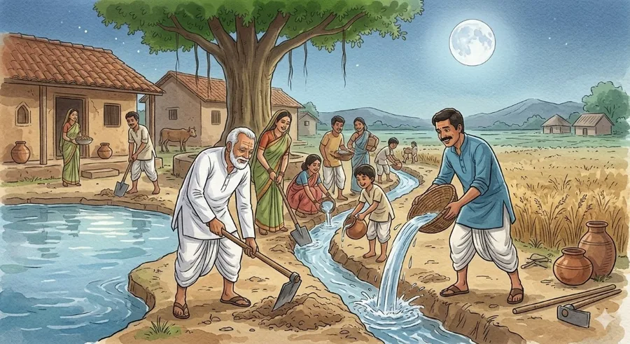
‘जीवन का सबसे बड़ा पुरस्कार है परिश्रम!’ सभा में सफेद खादी पहने देश के एक प्रसिद्ध नेता व्याख्यान देते हुए कह रहे थे—‘हमारे सब दुःख, सब अभाव हमारे अपने उद्योग से दूर हो सकते हैं।’
‘हमारे खेत वर्षा न होने से सूख रहे हैं,’ एक किसान ने कहा—‘हम उद्योग करके वर्षा तो नहीं करा सकते।’
‘यह ठीक है कि वर्षा करा लेना हमारे वश में नहीं है,’ नेताजी ने कहा—‘लेकिन खेतों को सींचने की कोई-न-कोई व्यवस्था हम लोग जरूर कर सकते हैं, यदि आप सब उद्योग करने को तैयार हों।’
‘हम तैयार हैं,’ एक स्वर से सबने कहा।
‘तब आइए, यही काम पहले किया जाए।’ वे नेताजी और गाँव के सब लोग सलाह करने लगे। पूछने पर पता लगा कि गाँव से थोड़ी दूरी पर एक तालाब है और उसमें खूब पानी है।
‘तालाब दूर है,’ एक किसान बोला—‘उसका पानी सब खेतों तक नहीं चढ़ेगा।’
‘हम सब लोग मिलकर तालाब को नजदीक पकड़ लाएँगे,’ नेताजी ने हँसकर कहा—‘पानी जहाँ खुद नहीं चढ़ेगा, वहाँ उसे कान पकड़कर चढ़ा देंगे।’
नेताजी ने फावड़े, टोकरियाँ, पानी उलीचने के छबड़े आदि मँगवाए। वे जब तालाब पर जाकर खुद गैंती लेकर नाली खोदने लगे, तो गाँव के सभी लोगों में जोश आ गया।
नौजवान नाली खोदने लगे। बूढ़े, बच्चे और स्त्रियाँ मिट्टी फेंकने लगीं।
पाँच-छः घंटे में तालाब से लेकर खेतों के पास मुख्य-मुख्य स्थानों तक नालियाँ खुद गईं।
बहुत-से खेतों में तालाब का पानी नालियों से ही पहुँच गया। ऊँचे खेतों के पास गड्ढों में भरा पानी छबड़ियों से खेत में उलीचा जाने लगा। चाँदनी रात थी। लोग उत्साह में थे। रात के दस बजे तक काम हुआ और गाँव के लगभग सभी खेत सींचे जा चुके थे।
नेताजी के पास जब वे फिर इकट्ठे हुए, तो गाँव के मुखिया ने कहा—‘हमने आपकी कृपा से अकाल को पछाड़ दिया है।’
नेताजी ने कहा—‘आप सबके श्रमदान ने यह चमत्कार किया है। आदमी हताश होकर बैठ न जाए, वह उद्योग करने के लिए कमर कसे तैयार खड़ा रहे, तो ऐसी कोई कठिनाई नहीं, जिसे वह पछाड़ न सके। परिश्रमी के पैर कठिनाई की ठोकर से रुकते नहीं। सफलता को उसके चरण चूमने पड़ते हैं।’